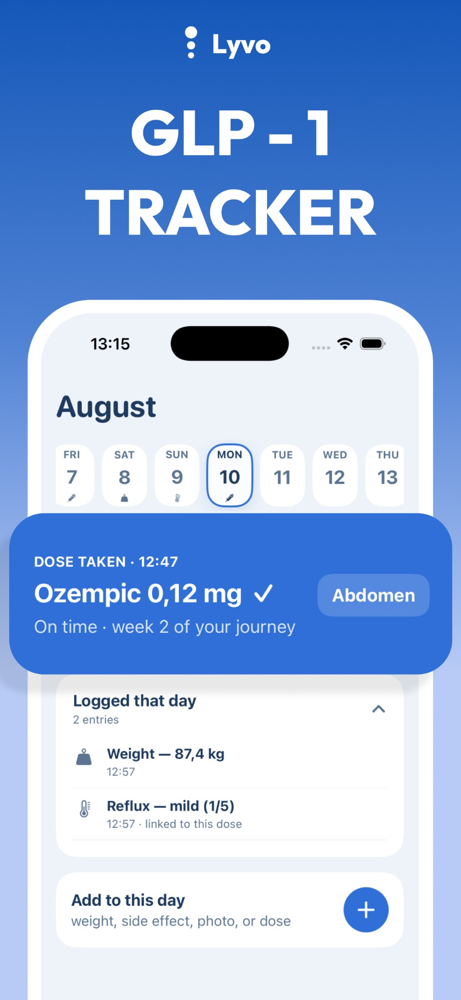
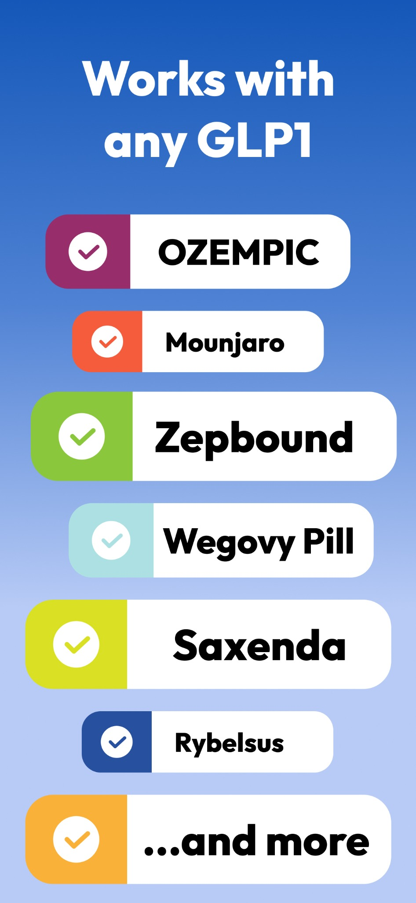
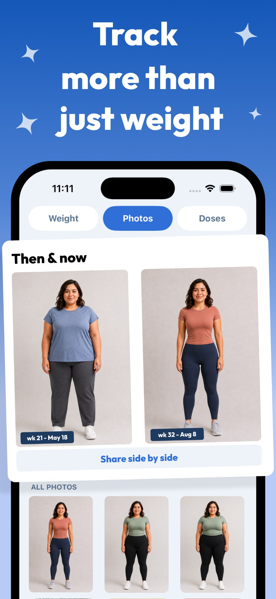

Keep a medication log
Record your injection or pill routine, including dosage and time.
GLP-1 tracker
Lyvo
iOS & AndroidKeep your GLP-1 routine in one place, with medication logs, reminders, a weight timeline and side-effect tracking.
Keep medication logs, daily notes and progress photos together.



Record your injection or pill routine, including dosage and time.
Follow your weight timeline and keep a record of how you feel.
Use reminders to help keep track of your schedule.
Questions, feedback or a feature you’d love to see? Get in touch.
Contact support ↗